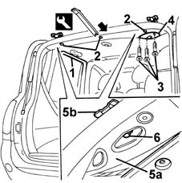

7015A24 tailgate hinges - repair or replace with tailgate removed
- Path
- Procedures > 70 FITTINGS > 7015 TAILGATE/FLAP > 7015A tailgate assembly > 7015A24 tailgate hinges - repair or replace with tailgate removed
- Kind
- repair procedure (removal / refitting; the operation number is the code)
- Applies to
- all engines; all production periods
- Interactive page
- https://sloeber94.github.io/elrnDB-fMltpl/en/#/2892114
Applies to: all engines; all production periods
1. Remove the rear door seals near the ceiling trim.
2. Using the appropriate tool, disengage the rear retaining buttons on the ceiling trim.
 | Name | Country |
|---|---|---|
2 | Scraper blade | 1.878.077.000 |
3. Undo the bolts on the seat belt cover.
4. Remove the cover.
5. Slightly lower the ceiling trim (5a) and undo the hinge bolts (5b).
6. Remove the hinges.

Applies to: all engines; all production periods
Check that the hinges are undamaged.
Fit the hinges and screw in the bolts without tightening them.
Once the tailgate is refitted, refer to op. 7015A14 tailgate - adjust centring and profile - includes hinge and compartment seal adaptation